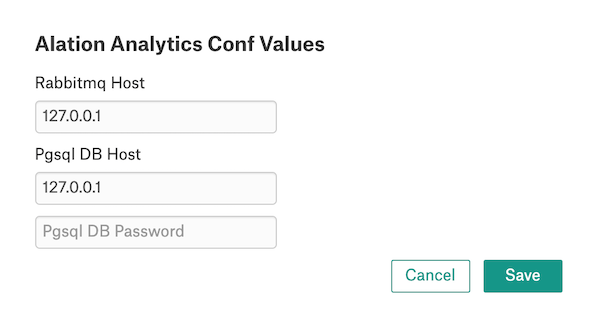
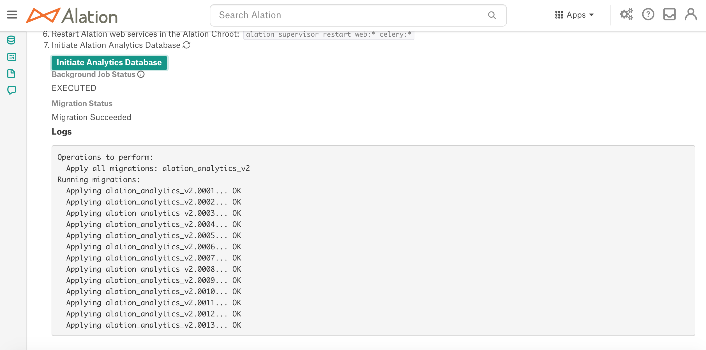
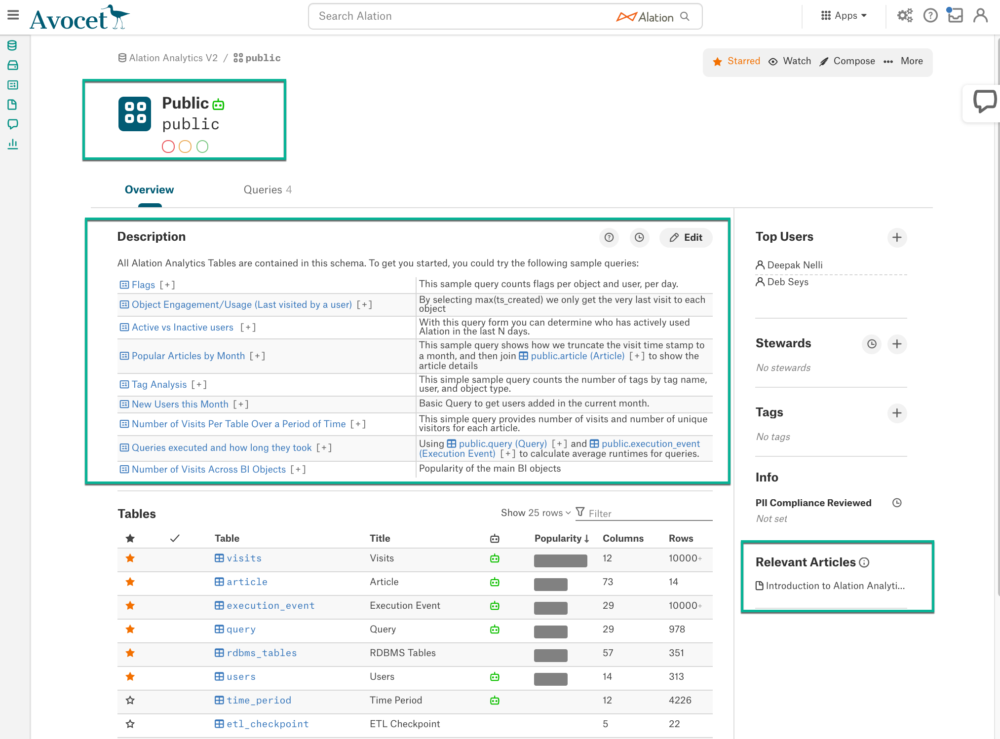

Enable and Install Alation Analytics V2¶
Customer Managed Applies to customer-managed instances of Alation
Available from version 2020.3
Overview¶
Enabling Alation Analytics V2 on the Alation instances where Alation Analytics V1 has never been used before differs from enabling it on the Alation instances where Alation Analytics V1 is in use.
If Alation Analytics V1 has been previously enabled on your instance, the Alation Analytics V2 functionality is not available by default. To transition from V1 to V2, refer to the guidelines in Transition from Alation Analytics V1 to Alation Analytics V2 on how to enable V2 and/or maintain both versions.
On the Alation instances where Alation Analytics has never been used before, you can enable V2 from the Alation user interface. In Admin Settings > Labs (versions 2021.4 or earlier) or Admin Settings > Feature Configuration (versions 2021.1 and newer), locate the feature switch Alation Analytics V2 - Understand the Alation usage patterns at your organization. Use the switch to enable the Alation Analytics application and proceed to installation.
Note
We recommend that Alation Analytics V2 be installed on a Friday so that the initial ETL process can run over the weekend. The time of the ETL process depends on the amount of data in the internal application database. The initial ETL extracts the first six months of the catalog usage data and takes longer than subsequent ETL jobs.
There are 2 installation options for Alation Analytics V2:
Installation on a separate server — Recommended by Alation for both standalone instances and instances that use the HA pair.
Note
For instances using HA pair configuration, it is strongly recommended to install Alation Analytics V2 on a separate server. We recommend this option for HA to ensure that the Alation Analytics V2 components remain operational and the ETL continues to work if the primary server fails over to the secondary server. You won’t need to reinstall the Alation Analytics components after the failover.
Installation on the same server with the Alation catalog — You can choose this option if your host server is large enough to accommodate both the Alation application and Alation Analytics V2 and the server resources and performance are not a concern. Please note that both the internal server database and the Alation Analytics database grow over time. The host server should be able to support this growth.
Note
Installation on the same server is not recommended for the HA pair. Alation Analytics is installed in addition to the Alation application and does not get replicated from the primary to the secondary server. In case of a failover, Alation Analytics will not be available on the secondary server and will need to be installed.
Follow the steps below to install Alation Analytics V2.
Step 1: Prepare the Host¶
Use these requirements to either prepare a separate machine or evaluate and prepare an existing Alation catalog host.
Requirement |
Description |
|---|---|
OS |
|
CPU |
4 cores |
Memory |
|
Space for /var/lib/docker |
Allocate a minimum of 32 GB disk space to the directory /var/lib/docker |
Space for the installation directory |
Allocate enough disk space for the installation directory. Recommended is 1.5-2 times the size of Rosemeta (Alation’s internal Postgres database) as this is almost its replica. The minimum is 32 GB. See Check the Alation Application Database Size about how to find out the size of Rosemeta. Location of installation directory:
|
Check the Alation Application Database Size¶
To calculate disk usage for your Rosemeta database, use the following command on the Alation host server from inside the Alation shell (requires SUDO permissions). Depending on your PostgreSQL version:
du -sh /var/lib/pgsql/9.3/
or
du -sh /var/lib/pgsql/9.6/
Make sure you have 1.5-2 times more free disk space (in GB) before you enable Alation Analytics V2.
Step 2: Install Docker Engine¶
Note
Other containerization software, such as Kubernetes, Openshift, or Podman, is not currently supported. Alation Analytics V2 can only be installed on Docker (v. 18 or later).
The way you install Docker Engine depends on your Alation version.
Releases 2022.4 and Newer¶
In these releases, there are two ways to install Docker Engine:
Use Alation Container Service to install Docker with the root user. See Install Docker Using Alation Container Service.
If you have additional security requirements, you can install Docker in rootless mode. This is supported on the following operating systems:
Debian 10
Fedora 33, 34
Oracle Linux on Red Hat-compatible Kernel 8, 8.5
Redhat 8
Ubuntu 18
Follow Docker’s official instructions for installing in rootless mode. To complete the use of rootless mode, you will need to follow additional steps that are provided below. Installing rootless Docker will also require a system reboot.
Releases 2021.2 to 2022.3¶
Use Alation Container Service to install Docker: Install Docker Using Alation Container Service.
Releases 2020.3.x - 2021.1.x¶
Docker Engine is available for a variety of Linux platforms. Install Docker in your preferred way.
General recommendations: Install Docker for Alation Versions 2020.3.x - 2021.1.x
Examples of instructions per OS:
Step 3: Install Docker Compose¶
Docker Compose relies on Docker Engine to work. Install it after you have installed Docker Engine.
Use either of the following methods to install Docker Compose. The second method requires pip to be installed on the server.
Method 1¶
sudo curl -SL "https://github.com/docker/compose/releases/download/1.27.0/docker-compose-$(uname -s)-$(uname -m)" -o /usr/local/bin/docker-compose
sudo chmod +x /usr/local/bin/docker-compose
sudo ln -sf /usr/local/bin/docker-compose /usr/bin/docker-compose
Method 2¶
To install the latest version of Docker Compose (requires pip to be installed):
pip install docker-compose
Step 4: Check the Docker Daemon¶
After Docker Engine has been installed, the Docker daemon should start automatically. Check to make sure it has started.
For regular root installations of Docker:
sudo docker version
or
sudo systemctl status docker
For rootless Docker installations:
docker version
or
systemctl --user status docker
Note
Type q to exit from the systemctl command.
Start Docker Daemon in Rootless Mode¶
If you have installed Docker in rootless mode and the daemon is not running, run the following command to start it a single time:
systemctl --user start docker
Run the following commands to automatically start the rootless Docker daemon whenever the system reboots. This is recommended since you will need to reboot the system as part of the setup later on.
systemctl --user enable docker
sudo loginctl enable-linger $(whoami)
Step 5: Set Up Rootless Docker¶
If you installed Docker in rootless mode, you must follow the steps below before installing Alation Analytics. If you installed Docker as root, you can skip to Step 6: Open Ports.
Enable Source IP Propagation¶
By default, Docker in rootless mode doesn’t propagate source IP addresses from requests to containers. Preserving the source IP address is necessary to make the IP whitelisting feature work in Alation Analytics. As the non-root user that installed rootless Docker, run the following commands to update the port driver for rootless mode and enable source IP propagation:
cd ~/bin
curl -o slirp4netns --fail -L https://github.com/rootless-containers/slirp4netns/releases/download/v1.2.0/slirp4netns-$(uname -m)
chmod +x slirp4netns
mkdir -p ~/.config/systemd/user/docker.service.d/
cat > ~/.config/systemd/user/docker.service.d/override.conf << EOF
[Service]
Environment="DOCKERD_ROOTLESS_ROOTLESSKIT_PORT_DRIVER=slirp4netns"
EOF
systemctl --user daemon-reload
systemctl --user restart docker
Enable cgroup v2¶
Alation Analytics will require all controllers such as cpu, memory, and pid to be delegated to the non-root user you used to install Docker. To do this, the machine must have cgroup v2 enabled.
First check whether cgroup v2 is enabled:
docker info --format '{{.CgroupDriver}}'
If this command returns
systemd, cgroup v2 is enabled and you can skip down to Set Rootless Context for Root User. Otherwise, keep following the steps below to enable cgroup v2.You need to add an argument to grub. You can do this in one of two ways:
If the grubby command is available, run:
sudo grubby --update-kernel=ALL --args="systemd.unified_cgroup_hierarchy=1"
If grubby is not available, use a text editor to edit /etc/default/grub manually. On the GRUB_CMDLINE_LINUX line, add
systemd.unified_cgroup_hierarchy=1as an argument inside the quotes. Then run:sudo update-grub
You now need to change the systemd configuration. The commands for this depend on what Linux platform you’re running.
On any platform except Oracle, run the following commands:
sudo mkdir -p /etc/systemd/system/user@.service.d
cat <<EOF | sudo tee /etc/systemd/system/user@.service.d/delegate.conf [Service] Delegate=cpu cpuset io memory pids EOF
sudo systemctl daemon-reload
On Oracle Linux platforms, run the following commands:
sudo mkdir -p /etc/systemd/system/user@.service.d
cat <<EOF | sudo tee /etc/systemd/system/user@.service.d/delegate.conf [Service] Delegate=yes DelegateControllers=cpu cpuset io memory pids EOF
cat <<EOF | sudo tee /etc/systemd/system/user-$(id -u).slice [Unit] Description=Fix cgroup controllers After=user.slice Requires=user.slice Before=systemd-logind.service [Install] WantedBy=multi-user.target EOF
sudo systemctl enable user-$(id -u).slice
sudo systemctl daemon-reload
Reboot the system.
sudo rebootIf you haven’t configured the Docker daemon to restart automatically after a reboot, restart it manually now.
systemctl --user start docker
Set Rootless Context for Root User¶
The Alation Analytics v2 installer runs as the root user, so you need to let the root user know that Docker is in rootless mode. Do this by setting the Docker context with the following commands:
Change to the root user:
sudo suExport the path of the rootless Docker binaries. Replace <username> with the username of the user that installed rootless Docker.
export PATH=/home/<username>/bin:$PATH
(Optional) Copy the export to files like ~/.bashrc for making it permanent.
echo 'export PATH=/home/<username>/bin:$PATH' >> /root/.bashrc
Remove the DOCKER_HOST environment if set, so the context setting will work.
unset DOCKER_HOST
Get the numeric ID of the non-root user that installed rootless Docker. You’ll need it in the next step. Replace <non-root-username> with the username of the user that installed rootless Docker.
id -u <non-root-username>
Create the rootless context for the root user to access the rootless Docker daemon. Replace <non-root-user-id> with the numeric ID of the non-root user that installed rootless Docker.
docker context create rootless --docker host=unix:///run/user/<non-root-userid>/docker.sock
docker context use rootless
Important
After setting up rootless Docker, all remaining installation commands must be run as root, without sudo.
Step 6: Open Ports¶
This applies only if installing on a separate server.
On the host server, open ports 25432 and 5672 in your firewall for the message broker and PostgreSQL and whitelist the IP of the main Alation server running the catalog on this host. It is recommended to only allow access for the IP of the machine that hosts the Alation catalog and block all other IPs.
Step 7: Create an Installation Directory¶
Note
Make sure that at least 32 GB of free space is available on the host for the Alation Analytics installation directory.
Release 2020.4 and Later¶
From release 2020.4, installation is not tied to the directory /opt/alation-analytics and can be anywhere on the host. You can skip this step as the installation directory can be created automatically during installation.
Alternatively, you can create a custom installation directory on the host beforehand. Note down the path as you will need to specify it during installation.
If no custom installation directory is specified during installation, Alation will attempt to locate the directory opt/alation-analytics on the host and install into it. If such a directory does not exist, installation cannot proceed until the path is specified.
Release 2020.3¶
On the server where you are going to install Alation Analytics V2, create a new directory at /opt:
sudo mkdir -p /opt/alation-analytics
Step 8: Install Alation Analytics¶
This requires the role of a Server Admin.
In your browser, sign in to the Alation catalog and go to Admin Settings > Feature Configuration (from version 2021.1) or Labs (versions before 2021.1).
Locate the switch for Alation Analytics V2, toggle it on, and save the changes.
Note
If Alation Analytics V1 has previously been enabled on your instance, the Alation Analytics V2 switch will not be available by default.
After you save the changes, the Alation Analytics Settings page will open. This page contains a summary of the installation steps along with some important links. Keep the page open so you can use the links later. There is no need to use the README file. Proceed with step 4 below.
Download the Alation Analytics V2 installation package (373 MB) using one of the following options:
To download to your local machine, click Download AA. This is the only option in 2020.3.
To download with a curl command, copy the provided command and run it on the Alation Analytics host machine. This option is available in 2020.4 and later.
Copy or move the downloaded package to the Alation Analytics V2 host directory that you have prepared:
In 2020.4 and newer, the installation package can go in any custom directory on the host machine, for example /tmp.
In 2020.3, the installation package must be moved to the directory /opt/alation-analytics on the host machine.
Un-tar the downloaded Alation Analytics file and navigate into the un-tarred folder. Locate the installer file. It’s an executable binary file with the same name as the tar file.
Determine whether you need to use one of the available installation flags:
Flag
Description
-wAvailable in 2021.3 and newer
Lets you specify which system user will own the installed files, configs, and logs.
Without this flag, ownership will be assigned to the root user.
-bAvailable in 2023.1.4 and newer
Traffic to the Postgres and RabbitMQ containers will be bound to a specific IP address. The address will be stored in /etc/default/alation-analytics.env and set in docker-compose.yaml during installation.
This flag enables Alation Analytics to be compliant with CIS Benchmark standards for Docker.
Without this flag, the Postgres and RabbitMQ containers are exposed on all network interfaces (0.0.0.0) in the host.
Run the installer as the root user (if you’ve installed rootless Docker) or using sudo.
Example with no flags (replace
x.x.x.xwith the version number in your tar and installer files):sudo {untar_directory}/alation-analytics-x.x.x.x/alation-analytics-installer-v-x.x.x
Applies to version 2021.3 and newer: Example with the
-wflag (replace<username>with the user who will own the Alation Analytics installed files):sudo {untar_directory}/alation-analytics-x.x.x.x/alation-analytics-installer-v-x.x.x -w <username>
Applies to version 2023.1.4 and newer: Example with the
-bflag (replace<aa_ip_address>with the IP address to bind incoming traffic to):sudo {untar_directory}/alation-analytics-x.x.x.x/alation-analytics-installer-v-x.x.x -b <aa_ip_address>
The installer will ask where to install Alation Analytics. The directory you choose will contain the data mounts for the Docker images. Enter the absolute path to the chosen directory.
================================================================= *** You can exit by pressing Ctrl+C at any time *** Please enter where you would like to install Alation Analytics leave blank to use the default location (/opt/alation-analytics/) =================================================================
The installer will ask if you want to enter your own password or use a strong auto-generated password for Alation Analytics. Save this password in a secure place. You will need it in a later step.
Enter 1 to specify your own password. You will need to enter the password two times. The password you choose must meet the following requirements:
Minimum of 9 characters
Maximum of 24 characters
At least 2 lowercase letters
At least 2 uppercase letters
At least 2 numerals
At least 2 special characters from: ! @ # % ^ * _
Note
# and _ are not allowed as the first character.
Enter 2 to use an auto-generated password. The generated password will be printed to the console.
The installer will check all prerequisites and, if they are met, install Alation Analytics.
In 2023.3.2 and later, a password will be generated for the RabbitMQ component during installation. You’ll see a message like this:
Use the following generated password to establish external connections to rabbitmq: <your-rabbitmq-pasword>
Save this password in a secure place. You will need it in a later step.
The installer will ask where Alation itself is installed. This will allow traffic from Alation to Alation Analytics.
Enter 1 if Alation and Alation Analytics are installed on the same host.
Enter 2 to specify the IP address of the Alation host, then enter the IP address.
Enter 3 to specify the fully-qualified domain name (FQDN) of the Alation host, then enter the FQDN.
============================================================================================= *** You can exit by pressing Ctrl+C at any time *** Please enter the IP or FQDN of the host which Alation Catalog is installed on. This will whitelist Alation server and allow access to the Alation Analytics database Choose 1 if Alation Analytics and Alation are going to be installed on the same host. (127.0.0.1) Choose 2 to enter the IP of the Alation host manually. ex: 10.10.10.1 Choose 3 to enter the FQDN of the Alation host manually. ex: alation.example.com 1. Use localhost (127.0.0.1) as Alation Data Catalog IP. 2. Enter IP manually 3. Enter FQDN manually =============================================================================================
Note
The installation logs can be found at /var/log/alation-analytics/installer.log (path inside the Alation shell).
Step 9: Configure Alation Analytics¶
After the installation, configure and initialize the Alation Analytics V2 database.
Return to the Alation Analytics Settings page and click the link click here to view conf values and change postgres password. This opens the Alation Analytics Conf Values dialog:
Specify the values and click Save:
Rabbitmq Host and Pgsql DB Host: IP address of the Alation Analytics server. The default value is 127.0.0.1 which stands for
localhost. If you have installed Alation Analytics on the same server with the Alation application, leave the default value. If you installed on a separate server, enter the IP of the remote host.Note
If you used the
-bflag to bind Postgres and RabbitMQ traffic to a specific host during installation, enter the same address you specified during installation.Pgsql DB Password: type the password you created during the installation for the PostgreSQL database.
Use SSH to connect to the Alation server.
Enter the Alation shell.
sudo /etc/init.d/alation shell
In 2023.3.2 and later, set the password for RabbitMQ using the password that was generated during the installation of Alation Analytics:
Change to the
alationuser.sudo su alation
Set the value in alation_conf.
alation_conf alation_analytics-v2.rmq.config.password -s '<your-rabbitmq-pasword>'
Exit the
alationuser.exit
Restart the Alation web services:
alation_supervisor restart web:* celery:*
If you plan to restore the Alation Analytics database from a backup, go to Restore a Backup (don’t click the Initialize Analytics Database button in Alation).
If you’re starting from scratch, wait 5 minutes for Alation Analytics to fully start up. Then return to the Alation Analytics Settings page and initialize the Alation Analytics database by clicking the Initiate Analytics Database button. This kicks off a job to create the database schema. While the job is running, you can click the Refresh button to see its current status. After the job has run, the Alation Analytics V2 database becomes available as a data source in Alation.

After Installation¶
After the database has been initialized, the very first ETL is triggered automatically to load the the data from the internal database. After the initial ETL, the next one will run automatically at night (default configuration) or can be triggered manually using a one-off script. Metadata extraction for Alation Analytics V2 runs automatically after every ETL.
Important
For users to be able to view, query or manage the Alation Analytics V2 data source, they must be granted access. See User Access to Alation Analytics V2.
The Alation Analytics V2 data source that becomes available in Alation comes with a prepackaged data dictionary with table and column descriptions, a number of sample queries linked to the Description field of the schema Public and a number of out-of-the-box articles referenced under the Relevant Articles for schema Public (grouped under the parent article Introduction to Alation Analytics). Review these materials to familiarize yourself with the structure of the Alation Analytics V2 data source:
